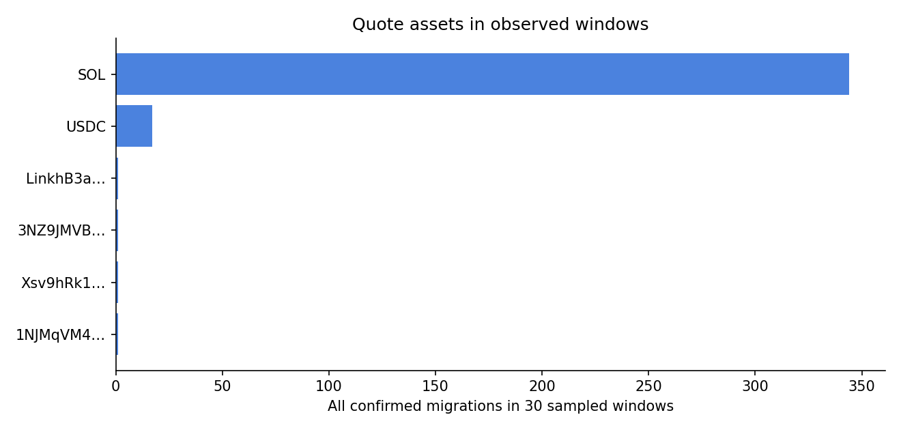
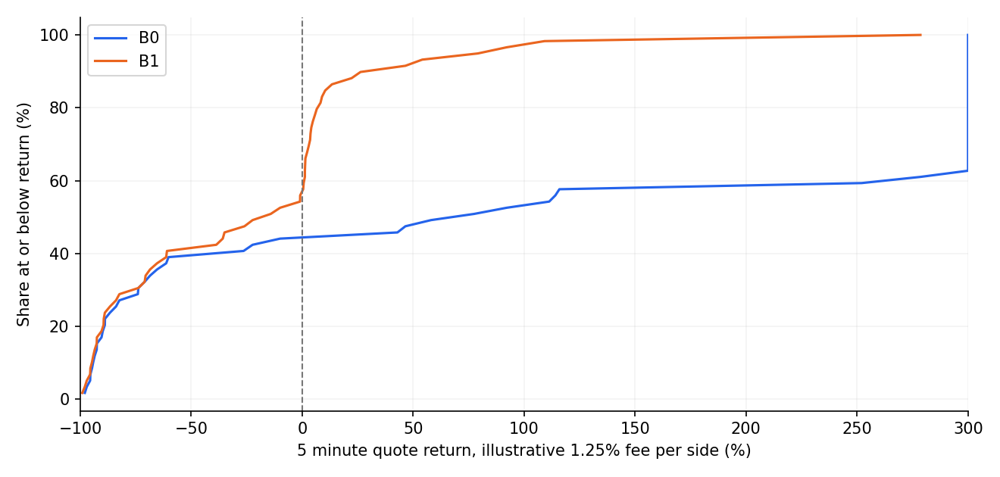

链上观察期： 2026-08-21T00:00:00+00:00 至 2026-09-20T00:00:00+00:00。每日预先选定 15 分钟，合计 450 分钟，占 30 天时间的 1.04%。这是时间分层样本，不是 30 天毕业全量。
在抽样窗口中，迁移权限地址相关交易 476 笔，确认的 Pump→PumpSwap 毕业迁移 365 个，成功建模 81 个；建模失败 0 个。完整主情景的分析币数 80，场景行 1192。
主情景： B0 假设建池交易后同一 slot 中最先买入；SOL 池投入 0.05 SOL，其余池投入初始配对资产储备的 1/84；5 分钟后全部卖出。按每次买卖各计 1.25% 的示意费率，不含网络费与竞价成本，SOL 子样本胜率 55.9% 、中位收益 +77.4% （n=59）；USDC 子样本胜率 35.3% 、中位收益 -83.1% （n=17）。
以 80 个可报价结果按每日 SOL 抽样比例加权、非 SOL 全取，对窗口内 365 个毕业事件作描述性推估，**描述性加权胜率 52.9%、加权中位收益 +58.0%**；完全不计交易费时对应为 52.9% 和 +62.1%。这只推回所选 30 个短窗口，不是全月估计。
这些是给定成交位置后的报价回放，不是可实现利润率。 每个池的后续储备按真实交易观察，但没有证明你的买单能抢在其他人之前，只把自己的仓位储备变化加到退出快照，没有重算中间其他人的交易。统一费率没有重建每笔历史的链上 FeeConfig，因此不能把它叫作精确净收益。

每个目标代币按迁移后的官方池去重，配对资产按 mint 地址归类。不同报价资产的 ROI 均在自身报价资产中计算，合计胜率可描述币的结果分布，无法合计成一笔 SOL 或美元利润。SOL 池按每天最多 2 个抽样，非 SOL 池全取；不能直接把 81 个建模币的简单胜率当作窗口内 365 个毕业币的胜率。
| 配对资产 | 窗口内毕业数 | 主情景有效池 | B0 5分钟胜率 | 中位收益 | 备注 |
|---|---|---|---|---|---|
SOL So11111111111111111111111111111111111111112 |
344 | 59 | 55.9% | +77.4% | |
USDC EPjFWdd5AufqSSqeM2qN1xzybapC8G4wEGGkZwyTDt1v |
17 | 17 | 35.3% | -83.1% | n<30，仅描述 |
LinkhB3a… LinkhB3afbBKb2EQQu7s7umdZceV3wcvAUJhQAfQ23L |
1 | 1 | 100.0% | +198.3% | n<30，仅描述 |
3NZ9JMVB… 3NZ9JMVBmGAqocybic2c7LQCJScmgsAZ6vQqTDzcqmJh |
1 | 1 | 100.0% | +448.1% | n<30，仅描述 |
Xsv9hRk1… Xsv9hRk1z5ystj9MhnA7Lq4vjSsLwzL2nxrwmwtD3re |
1 | 1 | 100.0% | +27.8% | n<30，仅描述 |
1NJMqVM4… 1NJMqVM4PadjuzYmeB7zV7q7DV8oB3ExaQCd9x6KsLz |
1 | 1 | 100.0% | +14.7% | n<30，仅描述 |
窗口内毕业数 是完整枚举；胜率分母是已回放的池。未抽中的 SOL 池不计为亏损。解析及模型错误在 audit.json 单列。
在已建模的 60 个 SOL 池中，18 个为 Mayhem 模式。两类池的实际 SOL 储备与虚拟报价储备相差很大，不应合并推断一种可执行策略。下表仍是 0.05 SOL、5 分钟、每边 1.25% 示意费率。
| 池类型 | 入场 | n | 胜率 | 中位收益 | P10 / P90 |
|---|---|---|---|---|---|
| 普通/boost | B0 | 42 | 76.2% | +1105.4% | -73.0% / +16892.3% |
| 普通/boost | B1 | 42 | 59.5% | +1.3% | -73.5% / +44.5% |
| Mayhem | B0 | 17 | 5.9% | -92.5% | -96.2% / -65.7% |
| Mayhem | B1 | 17 | 5.9% | -92.5% | -96.2% / -65.7% |
同 slot 的价格竞争： 35/60 个 SOL 池在迁移 slot 结束前价格已变化，其中 24 个涨幅超过 10 倍；B1/B0 入场现货价倍数的中位数 1.01、P90 158.8。因此 B0 的高收益高度依赖抢到很早的交易顺序。Jito bundle 内的连续交易也不能由外部交易任意插入。
额外 SOL 成本敏感性：假设以下金额是每次买入和卖出合计新增的网络费、优先费与 tip，直接从 0.05 SOL 投入的收益中扣除；这是情景假设，并非当时实际竞价成本。
| 往返额外成本 | B0 全 SOL 胜率 / 中位收益 | B1 全 SOL 胜率 / 中位收益 | B1 普通/boost 胜率 / 中位收益 |
|---|---|---|---|
| 0.0000 SOL | 55.9% / +77.4% | 44.1% / -14.2% | 59.5% / +1.3% |
| 0.0001 SOL | 55.9% / +77.2% | 44.1% / -14.4% | 59.5% / +1.1% |
| 0.0010 SOL | 55.9% / +75.4% | 33.9% / -16.2% | 45.2% / -0.7% |
| 0.0050 SOL | 55.9% / +67.4% | 16.9% / -24.2% | 21.4% / -8.7% |
额外成本只是报价资产中的 SOL 扣减；失败交易、未入场和滑点变化仍未纳入。
表中均为 每次买卖各按 1.25% 示意费率，不含 SOL 基础费、优先费、Jito tip 和账户租金。
| 入场 | 投入 | 持有 | n | 胜率 | 中位收益 | 平均收益 | P10 / P90 |
|---|---|---|---|---|---|---|---|
| B0 | 0.01 SOL | 1 分钟 | 60 | 63.3% | +53.1% | +15636.3% | -91.3% / +15589.2% |
| B0 | 0.01 SOL | 5 分钟 | 60 | 56.7% | +84.8% | +15755.3% | -95.8% / +15032.4% |
| B0 | 0.01 SOL | 30 分钟 | 59 | 33.9% | -91.0% | +15550.3% | -97.3% / +14523.8% |
| B0 | 0.05 SOL | 1 分钟 | 59 | 62.7% | +45.6% | +15885.9% | -88.1% / +15593.7% |
| B0 | 0.05 SOL | 5 分钟 | 59 | 55.9% | +77.4% | +15993.0% | -93.6% / +15159.2% |
| B0 | 0.05 SOL | 30 分钟 | 59 | 33.9% | -90.7% | +15543.2% | -95.8% / +14517.5% |
| B0 | 0.10 SOL | 1 分钟 | 59 | 62.7% | +39.3% | +15876.4% | -85.7% / +15585.3% |
| B0 | 0.10 SOL | 5 分钟 | 59 | 55.9% | +77.4% | +15984.0% | -91.8% / +15151.1% |
| B0 | 0.10 SOL | 30 分钟 | 59 | 33.9% | -90.7% | +15534.2% | -95.7% / +14509.7% |
| B1 | 0.01 SOL | 1 分钟 | 60 | 28.3% | -2.1% | -9.4% | -91.3% / +26.9% |
| B1 | 0.01 SOL | 5 分钟 | 60 | 45.0% | -12.1% | -2.2% | -96.0% / +47.3% |
| B1 | 0.01 SOL | 30 分钟 | 59 | 30.5% | -91.5% | -51.5% | -99.6% / +13.9% |
| B1 | 0.05 SOL | 1 分钟 | 59 | 27.1% | -2.1% | -17.8% | -88.2% / +25.2% |
| B1 | 0.05 SOL | 5 分钟 | 59 | 44.1% | -14.2% | -24.2% | -94.3% / +30.3% |
| B1 | 0.05 SOL | 30 分钟 | 59 | 30.5% | -90.7% | -51.6% | -99.6% / +13.6% |
| B1 | 0.10 SOL | 1 分钟 | 59 | 27.1% | -2.1% | -18.3% | -88.2% / +25.2% |
| B1 | 0.10 SOL | 5 分钟 | 59 | 44.1% | -14.2% | -24.3% | -93.2% / +30.3% |
| B1 | 0.10 SOL | 30 分钟 | 59 | 30.5% | -90.6% | -51.8% | -99.6% / +13.6% |

分布图横轴在 +300% 截断；完整极端值保留在表格和 CSV。均值受少数极端获利池强烈影响，不宜作为预期单笔回报。
非 SOL 池按初始报价储备的 1/84 投入，下面的收益以对应报价资产计价。合计时每个毕业池等权，没有把不同资产金额直接相加。
| 入场 / 持有 | 样本数 | 胜率 | 中位收益 | 平均收益 | P10 / P90 |
|---|---|---|---|---|---|
| B0 / 1 分钟 | 21 | 47.6% | -77.3% | +614.0% | -94.7% / +2657.7% |
| B0 / 5 分钟 | 21 | 47.6% | -50.5% | +672.5% | -95.8% / +2818.3% |
| B0 / 30 分钟 | 21 | 38.1% | -82.6% | +691.3% | -97.7% / +2842.0% |
| B1 / 1 分钟 | 21 | 19.0% | -77.3% | -31.0% | -94.7% / +15.8% |
| B1 / 5 分钟 | 21 | 47.6% | -50.5% | -10.8% | -95.8% / +27.8% |
| B1 / 30 分钟 | 21 | 38.1% | -82.6% | -2.4% | -97.7% / +8.4% |
migrate / migrate_v2 指令及其后池内两种 token vault 的余额识别毕业和初始储备。只有 complete=true、还未形成可交易池的状态不计入。数据：逐场景 CSV、池和关键签名、窗口与错误审计、分组统计 CSV、历史虚拟储备与费用抽查。程序：抓取与模拟、报告生成、事件抽查。
研究口径依据：Pump 程序文档、PumpSwap 程序文档、Pump 费用、Solana 交易费用、Jito Bundle。